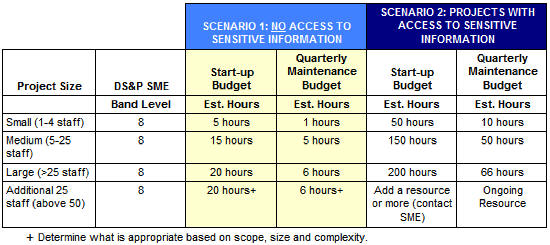

Contents
1. Background
2. Criteria and Guidance for Performing a TeamSD Method Adoption Workshop (MAW)
2.1 Criteria for Using TeamSD
2.2 When to Make the Decision to Use and/or Tailor TeamSD
3. Work Product Guidance for AIS Opportunities
3.1 Instructions for Using the AIS Work Product Tailoring Guidelines for TeamSD
3.1.1 Tailoring the Solutioning Approach
3.1.2 Define the Engagement Approach to be Used for Delivery of the Solution
1. Background [TOP]
Team Solution Design (TeamSD) was designed to support the pre-sales solution design and architecture for an IT solution
to a business or IT problem. The tasks, work products and related guidance were developed to provide just enough detail
to assure the client that the requirements are understood and that the solution will address them. TeamSD was designed
to be scalable from very small, simple engagements to large, complex ones. However, more guidance on how to address
these opportunities was needed.
IBM is now moving towards the deployment and adoption of TeamSD, along with the Client Value Method (CVM), by all lines
of business. This has led to the need for TeamSD to address a wider variety of solution opportunities with broader
participation from more service lines. The result is that, for specific client opportunities and requirements, the base
TeamSD needs to provide guidance on how to be supplemented for these different uses. For these opportunities, TeamSD
may need to be supplemented by additional tasks and work products related to specific service line offerings and
associated delivery processes.
This document provides guidance to the Sales and Solutioning teams for the tailoring of the TeamSD process. Although it
was developed with the typical opportunities that involve AIS in mind, we believe the approach is valid for many LOBs
and service lines. The guidance is divided into the following sections:
-
Criteria and Guidance for Performing a TeamSD Method Adoption Workshop (MAW)
-
Work Product Guidance Example for AIS Opportunities
2. Criteria and Guidance for Performing a TeamSD Method Adoption Workshop
(MAW) [TOP]
2.1 Criteria for Using TeamSD [TOP]
Currently, proposal teams are only required to use TeamSD on opportunities when the complexity and revenues
“clip level” meets business unit guidelines. If a Technical Delivery Assessment (TDA) or Integrated Technical Review is
required or appropriate, the Technical Solution Architect will present the project (Project Definition), key decisions
made (Architectural Decisions) and the most important risks, assumptions, issues and dependencies (Viability
Assessment). Additional required work products provide an understanding of the requirements, that is, the
functional and quantitative aspects of our solution. So, at least one of the following are required: Use
Case Model, Requirements Matrix, or Non-Functional Requirements. Note that Requirements Traceability and
Verification Matrix work product could be added by a LOB/Service Line as a fourth option to describe requirements. For
services engagements, estimates are also required (Estimation Report).
These required work products would normally be used on large, complex opportunities when TeamSD is used so they should
result in no new or additional work. Although these are the only required work products, it is likely that other
work products will be needed to describe the content and context of the solution for any review or proposal.
However, there is no reason not to use TeamSD for an opportunity because it provides a consistent and proven approach
for defining any solution that we are proposing to a client. Also, what may seem to be a very simple solution at first
may become more complex as more is discovered about the client requirements during solutioning.
The decision to use TeamSD, in whole or in part, on an opportunity or to tailor TeamSD to address specific
opportunities is up to the proposal team and depends on a number of factors:
-
Value of opportunity. Other than the Business Transaction Type (BTT) rating, there are also explicit clip levels
above which TeamSD must be used on an opportunity. Each IMT/GMT may also set clip levels that would trigger the use
of TeamSD. Even below these levels, it's logical to assume that the greater the value of the opportunity, the
stronger the argument for using TeamSD.
-
Risk and complexity of the solution to be designed. There are no explicit guidelines related to risk or complexity
other than BTT rating. However, the proposal team should consider using TeamSD if the following risk factors are
present:
-
-
Service Level Agreements (SLAs) with penalties greater than 5% or SLAs that may be difficult to achieve
-
IBM's understanding of the client's business or technical environment is not clear
-
Client's documentation of the current technical environment is out-of-date
-
Client's solution requirements are not clear
-
Client's stakeholders are not in agreement on the solution requirements
-
The scope of the solution is not well-defined
-
The solution is mission-critical for the client
-
The client requires the use of 3rd party package solutions that IBM is not familiar with
-
The solution is one that IBM has little or no prior experience with
-
The architecture is very complex due to factors such as distributed processing, legacy system integration,
and/or demanding operational requirements (e.g., performance, availability, manageability, security,
usability
-
Win themes and proposal strategy for the opportunity. The CVM Opportunity Plan artifact (ART 0612) provides
valuable insights into the client's buying behavior and BTT, their critical pain points and desired capability
improvements, their perception of IBM's capabilities and unique value proposition, as well as assessments of IBM's
strengths and weaknesses against the competition for this deal. It also provides an assessment of the probability
of winning the contract. The use and/or tailoring of TeamSD should be considered as a way to achieve the following:
-
Demonstrate how IBM's solution can directly address the client's pain points and required capability
improvements
-
Reinforce the client's perception of the value of IBM's differentiators
-
Address and overcome the perception of IBM's competitive weaknesses
-
Increase the level of confidence in IBM's solution design to improve our probability of winning the
contract
-
The level of cross-brand, cross-service line and cross-geo participation in the solution. The greater the number of
IBM organizations participating in the deal, the greater the risk of inconsistent understanding of requirements,
incomplete coverage of the requirements by the total solution and reduced viability of the total solution. The use
of TeamSD ensures that the efforts of all the participating organizations are effectively orchestrated and that the
resulting solution design will meet client requirements.
-
Time and budget available for developing the proposal. The timeframe to respond to a client is normally fixed when
the client has given IBM a Request for Proposal (RFP) or a Request for Quote (RFQ). The bid and proposal (B&P)
budget for defining the solution and preparing the proposal is typically a function of the value of the overall
opportunity and IBM's assessment of their probability of winning the contract. While the earlier factors (above)
have more to do with the decision to use TeamSD, the time and budget constraints will have a greater impact on how
to tailor TeamSD. Also, the breadth and quality of the content in the RFP will impact how much additional
information needs to be collected for an understanding of the client's business and technical environments and
their solution requirements. Assuming that the use of TeamSD is warranted, then the following approaches should be
considered:
-
A short response timeframe (e.g., less than four weeks) may require eliminating or streamlining some of the
TeamSD tasks, reducing the level of detail of the work products produced and/or using a more condensed
workshop approach to understand the requirements, identify a solution approach and define the solution.
-
A small B&P budget may require reducing the effort that can be applied to the solutioning tasks and
would have the same impact as a short response timeframe.
-
Increased response timeframes and B&P budgets will allow a more complete use of TeamSD and,
potentially, the tailoring of TeamSD to add tasks and work products to address more complex solution
requirements.
2.2 When to Make the Decision to Use and/or Tailor TeamSD [TOP]
The point in the overall sales and solutioning process when the decision to use and, if required, to tailor TeamSD is
typically made towards the end of the Understand phase when the CVM work product, Opportunity Plan, has been
sufficiently defined to "validate" the opportunity and to determine the appropriate approach to solutioning.
Tailoring the Solutioning Approach. A Method Adoption Workshop to develop a solutioning approach for a
specific opportunity should be done as part of the first task in the Explore activity of TeamSD, Define Project, and
the results should be recorded in the Project Definition work product.
The Template: Project Definition for Team Solution Design contains guidance on the appropriate use of several project
management work products on large, complex engagements, for example:
-
A separate Product Breakdown Structure (ENG 340) or Work Breakdown Structure (ENG 362) may be helpful in
structuring the estimating activities.
-
The Project Management System Summary (ENG 339) or the Work Product List (ENG 363) may be used to document the list
of major deliverables.
Because solutioning is a discovery process, the initial solutioning approach that is developed may need to be modified
as additional requirements and constraints are identified.
Tailoring the Delivery Approach. The second point where a Method Adoption Workshop should be used is
during the task, Identify Delivery Approach, when there are services that will be required to deliver the solution for
the client.
This initial document contains guidance for opportunities where AIS will be involved. As other service line guidance is
developed, it will be added to the Supporting Material section below.
3. Work Product Guidance for AIS Opportunities [TOP]
The core TeamSD work products will be adequate for solutioning many opportunities and minimal or no tailoring should be
required. However, there will be client opportunities where additional work products and content would be necessary to
define requirements and/or to define and assess a solution. This section provides an example for opportunities
requiring AIS services although much of the advice here is applicable to any service line. Similar examples could also
be created for other service lines using a similar approach.
While it is impractical to provide guidance for every potential solution type a client might need, there are some more
common ones that we can anticipate. The AIS engagement types for which this document provides additional tailoring
guidance are listed below:
-
AD 2.0 – for application development based solutions
-
Agile with Discipline – for Agile development solutions
-
Complex Systems Integration - System Engineering
-
Package Selection & Integration - selection only
-
Package Selection & Integration - implementation only
-
Portal Services
-
Security & Privacy
-
SOA Design, Development and Integration
The solutioning guidance for each of these opportunity types was developed by reviewing the initial phases of the
engagement delivery processes that are used for each and identifying the work products that are used for the following
major solutioning activities:
-
Understanding the client's business and technical environment
-
Assessing the business and technical environment to identify issues and gaps
-
Understanding the requirements for the solution
-
Developing the high-level solution design and architecture
-
Defining the delivery requirements for the solution
These work products have been further categorized according to their usage as:
-
Mandatory - required by GBS or AIS as part of solutioning any opportunity and part of the Risk Management review
-
Recommended - should be considered for most opportunities of a given type
-
Optional - should be considered only in specific situations, not needed for most opportunities of a given type
-
N/A - not a delivery work product used for a given opportunity type, but listed in the table because it is relevant
to another opportunity type
The accompanying spreadsheet, AIS Work Product Tailoring Guidelines for TeamSD, contains detailed guidance for
selecting the work products for solutioning and delivery and contains three tabs:
-
AIS Solutioning WPs - lists all the work products that are relevant to developing the solutions for AIS engagement
types by solutioning activity with usage recommendations
-
AIS Deliver WPs - lists all the work products that are relevant to delivering the solutions for AIS opportunity
types by solutioning activity with usage recommendations
-
WP Descriptions - an alphabetical list of all the solutioning and delivery work products with their UMF ID, the
solutioning/delivery content they contain, a short description and purpose.
3.1 Instructions for Using the AIS Work Product Tailoring Guidelines for
TeamSD [TOP]
Based on the understanding of the client's solution requirements developed during the Understand activity or the
explicit requirements that may be included in a Request for Proposal, the following would normally trigger the
tailoring of the TeamSD process and the use of these guidelines:
-
Some or all of the solution requires AIS capabilities to deliver
-
The base TeamSD process and work products will not provide adequate information to define the AIS solution
requirements, components and delivery approach
-
The project meets one or more criteria (described earlier in this document) for tailoring the TeamSD solutioning
approach
3.1.1 Tailoring the Solutioning Approach [TOP]
Assuming that tailoring is necessary, the AIS Application Architect, the S&D Technical Solution Architect and any
additional SMEs needed would hold a Method Adoption Workshop as part of the Define Project task and use the spreadsheet
(see the link at the end of this guideline) to do the following:
-
Select the Engagement Type. Decide which AIS engagement type(s) applies to this opportunity. Note
that this decision is based on the information available at the time and may be modified as more is learned about
the client's requirements.
-
Identify Candidate Work Products. Examine the recommended and optional work products on the AIS
Solutioning WPs tab for the selected engagement type(s) and determine if they are appropriate and necessary for
solutioning the client opportunity as currently defined.
For example, if a Portal Services engagement is appropriate for this client, there are several work products that
describe the client business environment that are recommended and unique to this engagement type - Brand Concept,
Brand Materials, Document Inventory and Strategic Market Position. Read the descriptions of these work products on
the WP Descriptions tab of the spreadsheet and decide if some or all are needed to understand and develop the
solution for the proposal.
Review the recommended and optional work products in each section of this first tab and select all that are
required for this opportunity. This will be your candidate work product list.
-
Identify Gaps to be Addressed. Organize and assess the information that has already been provided
by the client, the Opportunity Owner and others on the proposal team against your candidate work product list and
identify the gaps that need to be addressed during the Explore and Develop activities. Note that you want to
collect and document only enough information to develop a viable, quality solution design that addresses the
client's requirements. Many of the work products you select will be developed in greater detail during
delivery.
For each selected work product, indicate the appropriate level of detail or elaboration that will be sufficient for
the solutioning effort - minimal detail, moderate detail or complete.
-
Identify the TeamSD Tasks to be Added or Expanded. Many of the work products that you have
selected can be added as outputs and inputs to the existing TeamSD tasks. Others may require that additional tasks
be inserted at appropriate points in the TeamSD process.
For example, an Interactive Model work product is recommended for a Portal Services engagement. If selected, this
work product describes requirements and could be developed as part of the Identify and Outline Requirements task in
TeamSD and be documented as a section of the Requirements Matrix work product (a core TeamSD work product).
A work product like Process Definition may need to be developed in a separate task and documented as a stand-alone
work product. If, for example, this work product is needed to better understand the System Context, it may be
developed prior to the task, Describe System Context, and the work product would be added as an input to that
task.
The TeamSD work breakdown structure should be used as the framework for adding required tasks and work
products.
-
Develop a preliminary estimate of time and costs for the solutioning effort. When you have
completed the tailoring of the solutioning approach, it's important to do a preliminary estimate of the time and
costs to complete the solutioning effort. This estimate should be reviewed with the Opportunity Owner to validate
that the Bid and Proposal budget is sufficient to cover the costs and that the time requirements will meet the
overall schedule for developing and submitting the proposal.
If the estimates for completing the solutioning effort are too high, your options are to delete some of the work
products that have been added or to reduce the amount of information to be gathered or developed.
-
Record the tailoring decisions. If time permits, record the reasons for selecting the additional
work products. This will provide valuable lessons learned for future solutioning efforts and will help in improving
this guidance document.
-
Document the solutioning approach to be used. Depending on the complexity and scope of the
solutioning approach, document the tailored solutioning plan using a spreadsheet or project planning tool to ensure
that everyone participating in the effort understands the work products to be produced, the schedules for
completing them and the responsibilities of each team member. A Microsoft Project Plan work breakdown schedule of
the base TeamSD delivery process is available from MethodWeb for tailoring.
-
Update the approach as needed. Since the solutioning process will likely uncover additional
requirements and conversations with the client may revise the solution focus, the solutioning team needs to
evaluate the work products and tasks in the plan and make changes as needed. At a minimum, the plan should be
reviewed at the end of the Explore activity to determine if different work products should be selected for the
Develop activity.
If changes need to be made, work through steps 1 through 7 above for the revised approach.
3.1.2 Define the Engagement Approach to be Used for Delivery of the
Solution [TOP]
After the team has completed the solutioning process and is confident that the technical solution is viable and
addresses the client's requirements, the team then needs to conduct a Method Adoption Workshop to define the approach
to be used for the delivery of the solution. This is done in the task, Identify Delivery Approach. When the solution
requires services in order to be delivered, the services delivery manager and any additional SMEs may need to develop
the cost estimates for the solution in the task, Develop Solution-Specific Estimates, the next task in the Develop
activity. The deliverables and work products to be created and a preliminary project plan that includes schedules,
effort and cost estimates would then be included in the proposal.
-
Confirm the Delivery Process for the Engagement Type. During solutioning, the team selected the
engagement type and the work products that were appropriate for the solution. Based on the final design of the
solution and the decisions made about the project approach, the services team members should confirm which delivery
process(es) will be used as the basis for the proposal and SOW.
-
Conduct Method Adoption Workshop (MAW). The same approach for doing Method Adoption Workshops at
the beginning of any delivery engagement should be used to develop the delivery process during the pre-sales
solutioning effort. The primary difference is that the level of detail should be no greater than what is required
to develop a delivery plan and estimate that the team is confident can be executed and can meet the gross margin
targets for the engagement. Please note that for a fixed price proposal, the level of confidence in the plan and
estimates will need to be higher than that which is sufficient for a time and material proposal.
-
Select the appropriate delivery processes for the engagement. Identify the delivery processes
(methods) that are needed to cover the major elements of the solution from the MethodWeb catalog (or from other
sources if a delivery process has not yet been published in UMF format). For example, S&T's Operational
Transformation (OTM) delivery process might be needed to address process redesign, the AD 2.0 method might be
needed to address application development in an SOA environment and WWPMM practices would be used for project
management.
-
Merge the selected delivery processes and capability patterns. Select a "base" delivery process
(usually the one that addresses the main elements of the solution) and copy phases, activities and tasks needed
from the others into the "base" model. While this is best accomplished using the Rational Method Composer (RMC)
tool for methods in UMF format, other tools (e.g., Excel or Microsoft Project) may be considered.
-
Remove phases or activities that are not required. If the "base" delivery process contains phases
or activities that are out of scope for this opportunity, delete them from the "base" content. For example, if the
project is only going to deliver a detailed software design and specification, remove the build/test/deploy phases
from the "base." The result of these efforts should be a preliminary Work Breakdown Structure (WBS) that maps to
the PBS and serves as a framework for collecting cost and schedule estimates.
-
Identify the deliverables that will be developed for the client. These should include the solution
components as defined in the architecture overview, the component model and the release plan plus any additional
deliverables that have been identified, e.g., redesigned processes, user support documentation, etc. The selected
delivery process(es) will also include a number of standard deliverables that should be considered, although not
all of them will be required for each opportunity.
The Project Definition work product that has been updated during solutioning will also identify deliverables that
will have to be included in the delivery approach. . Delete any deliverables and their associated work products and
tasks that are not needed
-
Identify the work products that will be packaged as deliverables. Most deliverables that are part
of the Unified Method Framework (UMF) list their component work products. If a deliverable is required that has not
been defined in UMF, a list of work products that will comprise the deliverable should be developed.
-
Identify internal delivery work products. Many work products are created that are needed by the
delivery team to support detailed design, testing, deployment, change management, etc. While they are usually not
included in the SOW as client deliverables, they need to be identified so that the time and effort to create them
is included in the plan and the estimates.
The work products listed on the AIS Delivery Work Products tab of the accompanying spreadsheet, AIS Work
Product Tailoring Guidelines for TeamSD, indicate which ones are typically recommended or optional for the
different engagement types. Use this list as a checklist to ensure that they are included, when required, in the
tailored delivery process.
-
Identify activities and tasks to create the work products and deliverables. Once the deliverables
and work products have been selected, identify those activities and tasks in the work breakdown structure that
are required to create them.
Delete any remaining activities or tasks that will not be needed for this opportunity.
Note: For GBS, Partners and Project Managers are accountable and responsible to ensure that
both IBM's as well as client's contractual Data Security & Privacy requirements are implemented and sustained
on all client projects. This includes ensuring that each project team member protect sensitive data from
theft, loss, unauthorized access or disclosure, and misuse by at minimum applying GBS foundational DS&P
controls to our work environment. Therefore, minimum DS&P controls must be built into
proposals.
-
Create repeating sets of tasks or activities where required. If sections of the delivery process
will be repeated, e.g., when building and testing multiple components or releases, then the associated activities,
tasks and work products will have to occur multiple times in the project. This can be done while tailoring the
delivery process or it can be done when organizing the activities and tasks into the project plan.
-
Organize the remaining activities and tasks into a logical plan. Identify the logical dependencies
among the activities and tasks. Group activities and tasks according to the delivery competencies that will perform
them, e.g., application development tasks, testing tasks, integration tasks, etc., will likely be performed by
different delivery teams with different skills and may even be in different locations.
-
Document the plan. The Project Definition is the default work product in which to document
this information, but if the resulting WBS, associated schedules, and/or other information is complex, consider
using other UMF artifacts to designed to support this complexity, such as the Project Management System Summary
(ENG 339), the Work Product List (ENG 363), and / or the Work Breakdown Structure (ENG 362).
-
Estimate the effort and resources for the plan. Based on the available information and assumptions
about size, scope and complexity, develop estimates of effort for the activities and tasks using estimating tools
or the experience of the delivery manager and SMEs. Identify the different resource characteristics (job role, band
and location) that will be used to develop the pricing model and cost estimates.
Indicate if any work will have to be done by 3rd parties or sub-contractors.
Note: the pricing estimates below must be adjusted upward where the engagement scope for
DS&P extends beyond the foundational IBM DS&P controls (for example where the client has specified
additional requirements in the contract). In addition, the band level may need to be adjusted upwards depending
upon the complexity of the DS&P requirements. The pricing estimates have been adjusted to provide estimated
hours when there is no access to client systems (e.g. sensitive information).

-
Develop a high-level schedule and milestones for delivery. Lay out the delivery process over a
timeline and identify the estimated duration for the major phases and activities (e.g., as a GANTT chart)
indicating when major milestones will be completed. Using the WBS developed in the previous steps as the structure
for the estimating the effort and duration of each task or high level section will facilitate better insight into
potential delivery interdependencies and issues.
-
Identify any major delivery risks and risk mitigation strategies. If the development of the
delivery approach uncovers any delivery risks that have not already been identified (e.g., the delivery approach
requires the use of tools or techniques that require training the delivery resources), document those and indicate
what the risk mitigation approach will be for each (e.g., increase the estimated effort and time for a given set of
tasks or activities) in the Viability Assessment.
-
Review and finalize the tailored delivery process. Review the tailored delivery process and
confirm that all aspects of the solution and its implementation have been adequately addressed.
The total estimated cost of the solution (software and hardware components plus delivery) will be developed in the
following TeamSD task, Develop Solution-Specific Estimates.
AIS_Work_Product_Tailoring_Guidelines_for_TeamSD_2.2.xls
|